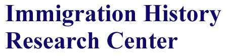

| university |
| home page |
|  |
|
. Regional contracts are held for a wide range of programmes including the dissemination of evidence based practice. Research expertise available to the Department has grown to encompass the areas of practice development, evidence based practice, health informatics and nursing education. In collaboration with other departments, strong supervisory teams are arranged to reflect both subject and method expertise. Current staff interests Helen Ellis Critical Care Nursing. |
| There is a week by week breakdown of a recent course on Digital Culture given at Emily Carr. The program was entitled Learning Without Frontiers. The Learning Development Institute sponsors a series of seminars and discussions throughout the year on learning-related topics. Archives of Web Pages from 1994-1999 There are literally hundreds of pages attached to this link. There are resources from courses taught at McGill University from 1994-1996. |